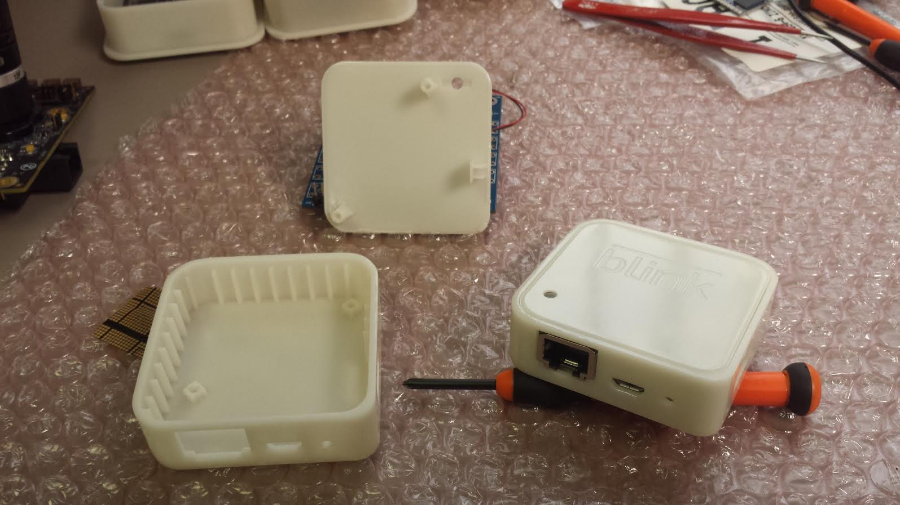
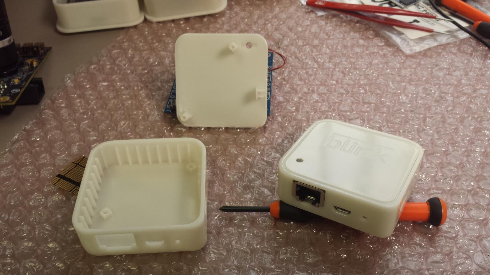

Hi, I'm Alex Paloranta
I am a Biomedical Engineer by training with a strong background in user-centric engineering and creative design-thinking. What started with strong technical expertise in a variety of technical proficiencies, has slowly been honed to focus on the product design and development process.
I am always looking to explore new projects on a consulting basis. Feel free to reach out with any inquiries questions.

Blink Project
 

3D Printed Porototypes for Sync and Blink Modules
In 2014 Immedia Semiconductor successfully ran a Kickstarter campaign for their proprietary low-powered smart security cameras which raised over $1 million. I was contracted as a product design consultant to assist with the design and prototyping of their Sync Module alpha units for Kickstarter fulfillment, which served as a WiFi-enabled hub for their Blink Camera Modules. After the primary design work was completed I continued to support future design changes for the production models of their Sync and Blink Modules.
Throughout the project I was responsible for:- Holding regular design meetings with various teams to review technical design and user needs
- Iteratively designing Sync Module components for form and mechanical assembly
- 3D printing numerous prototypes for an iterative design process
In late 2017 the popularity and commercialization of their cameras led to a $90 million acquisition of the company by Amazon.
About the Company:
Immedia Semiconductor is a leading provider of video and image processing chips for connected camera applications. Immedia's breakthrough low power solutions with 3D noise processing and noDRAM™ technologies enable consumer cameras with unprecedented image quality, battery life, price points and form factors. Immedia is also the company behind Blink, the ultra-affordable smart HD home monitoring and alert system.
Render of Blink Camera Alpha Unit

Render of Sync Module Alpha Unit Prototype
Frenotomy Surgical Tool
The Frenotomy Requires Careful Incisions in Neonates

Typical Surgical Tools Used During a Frenotomy Procedure
During a series of observations at Boston Medical Center teams were tasked with identifying a procedure or device that caused inefficiencies or prone to failure during surgeries. Our team decided to focus on improving the efficiency of the frenotomy procedure for neonates that are tongue-tied. The current standard uses a tongue elevator, hemostat, and surgical scissors to incise the frenulum, which requires an experienced practitioner to perform due to the sensitive anatomy of a neonate. Our goal was to create a device that combines the traditional tools for this procedure, is low risk to the infants, and requires minimal training for the operator.
Major points of the design process included the following:- Determining user needs through numerous interviews with constituents and users
- Creation of numerous initial design prototypes to determine optimal ergonomics and functions based on user feedback
- Final prototypes were made using laser cutting and 3D printing
A novel frenotomy tool design was prototyped which incorporates a hemostat and a safety blade that only actuates when the hemostat clamp is completely closed. A full business plan with proposed FDA regulatory pathways, IP strategy, FMEA, and validation studies were written and presented as a part of our Master’s project. The design was also well received by several surgeons familiar with the procedure.
About the Program:
The Master of Engineering (MEng) Program in Biomedical Engineering is a professional graduate degree program for students who intend to apply their advanced technical and leadership education and training to the development of new products for the health care, medical device, biotechnology, and biopharmaceutical sectors. The curriculum combines a full complement of technical engineering electives with an experiential, clinically focused biomedical product design and development sequence. Students in the Biomedical MEng degree program will work with leading clinicians to observe and identify unmet clinical challenges, design and develop innovative engineering solutions to those challenges, and explore the regulatory, intellectual property, and reimbursement pathways that will ultimately advance the standard of patient care through the deployment of their innovations.

Animation of the Frenotomy Tool Mechanical Operation
Mechanical Drawing of the Frenotomy Tool
Render of Frenotomy Tool Final Design
3D-Printed Prototype
Cryospray Research Device
Cross-Section with RadMap Module and Filling Tool
CSA Medical specializes in cryoablation of internal tissue with liquid nitrogen (LN2). I was solely tasked with the ambitious project of creating a number of test fixtures that contained a 3-dimensional array of 400 temperature measurement points embedded in a tissue-mimicking material. The fixture was then used to find the amount of tissue treated during procedures by controlling for a variety of parameters. This device was used to shape many of company’s product design decisions. The work performed on this project led to an authorship on a pending patent.
About the Company:
CSA Medical, Inc. develops and manufactures a proprietary interventional spray cryotherapy technology platform utilizing unique properties of liquid nitrogen spray delivered by a software driven device with specialty catheters that enable delivery of spray cryogen inside the body to flash freeze and destroy unwanted tissue allowing for a rejuvenative pattern of healing.

Final Builds of RadMap Modules
3D-Printed Prototype
Custom-Built Software for Data Analysis
Custom-Built Data Acquisition Box for Measuring 400 Temperature Channels
Parallella Project
Thermal Image of Parallella CPU Heating
I was contracted by Adapteva, a producer of high performance, credit card sized parallel processesing super-computers. Two years prior, they had successfully raised close to $1 million on Kickstarter for their low-cost consumer-grade Parallalla board. While this was primarily marketed as a research tool and sold as a bare circuit board, the CEO, Andreas Olofsson, wanted to create a more consumer-frieldly product by packaging the board with an enclosure. Additionally, due to the small size and high performance of the computer, the board would easily overheat when run at full computing power for extended periods of time. I was tasked with designing and coordinating the production of a custom-made enclosure with efficient heat-dissipation properties, while keeping costs to a minimum.
Several designs were proposed, tested, and prototyped. The final design consisted of a clear-anodized aluminum plate that sit flush on the heat-generating portion of the computer with thermal paste. The improved heat-dissipation properties were verified with CPU temperature sensors and thermal imaging while running stress-tests on the computer.
Once the final design was created I contacted numerous factories that specialized in custom machining and extruded aluminum enclosures. An initial order of 5,000 units was purchased and were subsequently sold on Amazon.
About the Company:
Adapteva, Inc. is a privately held semiconductor technology company based in Lexington, Massachusetts, founded in 2008. Adapteva has developed the world's most energy efficient multicore microprocessor architecture, immediately boosting by an order of magnitude the number of cores that can be integrated on a single chip. Adapteva's breakthrough architecture will have an immediate impact in a wide range of end user products from compact mobile devices to next generation supercomputers.
Adapteva’s groundbreaking Epiphany multicore architecture represents a new class of massively parallel computer architectures that is the future of computing and will disrupt a wide range of end markets from compact low power devices to next generation supercomputers. To enable parallel programming in heterogeneous environments, Adapteva is adopting an open source approach making the architecture, interface and programming information available to all.
Render of the Front of the Parallella Case
Thermal Image of Parallella CPU Heating
Bikelops Project
Partnered with two friends, I was charged with designing and prototyping a bike mountable phone case with a built-in light reflector to amplify a phone’s flash LED. The goal of this project was to create a phone case that could replace standard bike lights.
Throughout the design process I was responsible for:
- Determining optimal reflector shape
- Designing cases for multiple phone models
- Creating a design focused on low-cost injection modling tooling
- 3D printing prototypes to test for fit and durability
Several design iterations were completed until we had a design that performed well in field tests. Higher quality 3D prints were made and I obtained several quotes from machine shops for the costs of tooling and injection molding runs. A Kickstarter campaign was launched to try to raise enough funds for manufacturing. Although the design was well-received it did not make the funding goal in time, which we determined was due to the product being advertised as a flashlight rather than a phone mount. Despite this, this was a good experience for project management and marketing, and it served to strengthen my product design skills.
Bikelops Final Prototype
Bikelops Design Prototypes
Comparison of the Bikelops vs. a Stanard iPhone Flashlight
Light Amplification Measuremnet with Bikelops